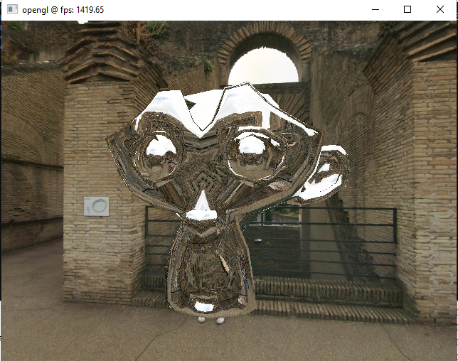
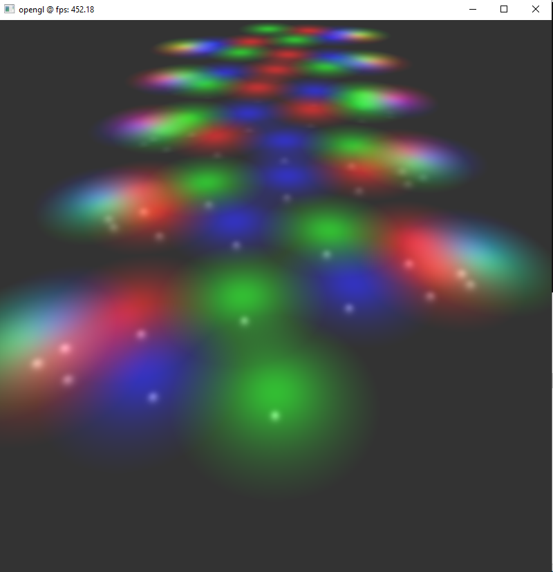
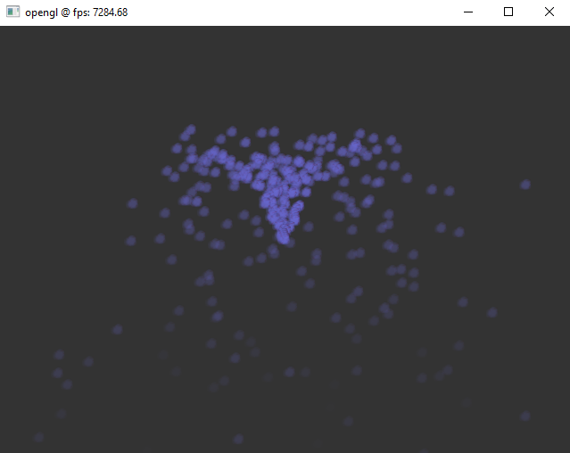

Antons OpenGL Tutorials (C++, Desktop OpenGL, GLEW, GLFW, GLM, STB, Assimp) |
2022 |
- Desktop OpenGL ( i wanted to use desktop GL, instead of embedded, to reduce deps when linking static )
- GLEW ( extension loader, the entire project exists to test this lib, but i dont really use it elsewhere )
- GLFW ( open hardware accelerated windows, used by many Benni projects )
- GLM ( math, normally integrated in my libDarkImage)
- Assimp ( loads 3d models, normally integrated in my libDarkGPU )
- STB image ( small image loading lib, normally i use my own libDarkImage in other projects )
|
|
I liked the tutorials, so i integrated them into my ecosystem ( aka writing custom cmake recipes for each tutorial )
|
|
The most important difference of my ecosystem is that all necessary libs are integrated by source.
|
|
So this is a fully standalone project that everybody can build without having to rely on find_package()
or what you have or have not installed on your system.
|
|
The tutorials should interest any 3D graphics programmer.
|
Download: (full) Sources + Binaries |
 ./cpp_Antons_OpenGL_Tutorials.7z15MB
./cpp_Antons_OpenGL_Tutorials.7z15MB |
Screenshot: cpp_Antons_OpenGL_Tutorials_cubemapping.png |
|  |
Screenshot: cpp_Antons_OpenGL_Tutorials_deferred_shading.png |
|  |
Screenshot: cpp_Antons_OpenGL_Tutorials_particle_system.png |
|  |